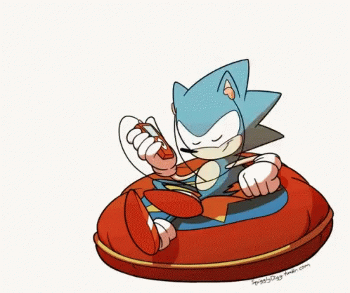
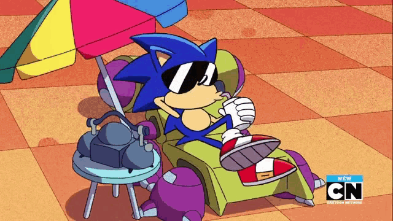

EL TAG DE LAS 20 CANCIONES
A CONTINUACIÓN TE PRESENTO MI TAG DE LAS 20 CANCIONES
¿Cuál es tu canción favorita?.
Canción que más odias.
¿Qué canción te pone triste?.
Canción que te recuerde a alguien.
Canción que te pone feliz.
Canción que te recuerde a un momento específico.
Canción cuya letra te sabes perfectamente.
Canción que te haga bailar.
Canción que te ayude a dormir.
Canción que te gusta en secreto.
Con qué canción te identificas.
Qué canción te encantaba y ahora odias.
Canción de tu disco favorito.
Qué canción puedes tocar con un instrumento.
Qué canción te gustaría cantar en público.
Canción que te gusta para conducir.
Canción de tu infancia.
Canción que nadie espere que te gusta.
Canción que quieres que pongan en tu funeral.
Qué canción te gustaría que te pusieran en tu boda.
>>Haz Click Aquí<<

